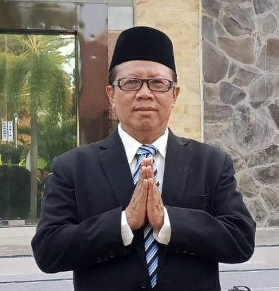

RAPAT ORANG TUA / WALI MURID
Bersama Mewujudkan Generasi Unggul
Sabtu, 30 Agustus 2025 | Aula Serbaguna SMK Gajah Mada Banyuwangi
Sambutan Kepala Sekolah
Drs. H. Witjanarko, M.Pd.
Assalamualaikum Warahmatullahi Wabarakatuh.
Selamat datang Bapak/Ibu Orang Tua dan Wali Murid yang kami hormati. Kehadiran Bapak/Ibu adalah wujud dukungan luar biasa bagi kemajuan pendidikan putra-putri kita.
Melalui rapat ini, kami ingin berbagi informasi mengenai program-program unggulan sekolah, rencana pengembangan ke depan, serta menjalin kolaborasi erat demi tercapainya Visi dan Misi SMK Gajah Mada Banyuwangi.
Mari kita bersama-sama menciptakan lingkungan belajar yang inspiratif, aman, dan kondusif untuk menyiapkan generasi muda yang berkarakter kuat, kompeten, mandiri, dan berdaya saing global.
Terima kasih atas kepercayaan dan kerja sama Bapak/Ibu.
Wassalamualaikum Warahmatullahi Wabarakatuh.
Visi Sekolah
SMK Gajah Mada Banyuwangi 2029
"Mewujudkan lulusan SMK Gajah Mada Banyuwangi yang unggul, berkarakter kuat, kompeten, mandiri dan berdaya saing global, melalui penguasaan kompetensi profesional yang relevan dengan kebutuhan dunia kerja serta keterampilan abad ke-21 yang inovatif."
Penjelasan Singkat:
- Unggul: Memiliki prestasi di atas rata-rata, baik akademik maupun non-akademik.
- Berkarakter Kuat: Berakhlak mulia, berintegritas, dan bertanggung jawab.
- Kompeten: Menguasai keterampilan teknis sesuai standar industri.
- Mandiri: Mampu berinisiatif, memecahkan masalah, dan berwirausaha.
- Berdaya Saing Global: Siap bersaing di pasar kerja nasional maupun internasional.
- Keterampilan Abad ke-21: Menguasai Berpikir Kritis, Kreativitas, Kolaborasi, dan Komunikasi (4C).
Misi Sekolah
Langkah Kami Menuju Visi
- Menyelenggarakan Pembelajaran Berbasis Kurikulum Industri: Kurikulum disinkronkan dengan kebutuhan Dunia Usaha dan Dunia Industri (DUDI).
- Menjalin Kemitraan Strategis dengan Dunia Kerja: Memperkuat kerjasama 8+i untuk magang, sertifikasi, guru tamu, dan penyerapan lulusan.
- Mendorong Lingkungan Pembelajaran yang Inklusif dan Inovatif: Menciptakan suasana belajar yang aman, nyaman, dan mendukung kreativitas siswa.
- Mengembangkan Potensi dan Keterampilan Abad ke-21: Mengintegrasikan 4C (Berpikir Kritis, Kreativitas, Kolaborasi, Komunikasi) dalam setiap pembelajaran.
- Membangun Budaya Sekolah yang Kuat dan Positif: Membentuk siswa yang berakhlak mulia, beretos kerja tinggi, dan mandiri.
Profil Lulusan Unggul
Berkarakter Pancasila & Siap Kerja
Lulusan SMK Gajah Mada Banyuwangi adalah individu yang:
Program Keahlian
Membentuk Profesional Muda
SMK Gajah Mada Banyuwangi menawarkan berbagai konsentrasi keahlian yang relevan dengan kebutuhan industri:
Setiap program keahlian didukung oleh kurikulum berbasis industri dan fasilitas praktik yang memadai.
Pembelajaran Inovatif
Kurikulum Nasional & Teaching Factory
- Menggunakan Kurikulum Nasional yang sudah disinkronkan dengan KKNI (Kerangka Kualifikasi Nasional Indonesia) dan kebutuhan dunia kerja.
- Fokus pada pengembangan keterampilan praktis melalui:
- Teaching Factory (TeFa): Pembelajaran berbasis produksi atau jasa nyata di lingkungan sekolah seperti Produksi Perangkat Lunak dan Perangkat Keras, Produksi perangkat IoT, Produksi Engine Dinamometer, Scantool Sepeda Motor, Alat Remap ECU Sepeda Motor, bengkel servis, studio digital, atau jasa akuntansi.
- Project-Based Learning (PjBL): Siswa belajar melalui proyek-proyek yang relevan dengan industri.
- Mengintegrasikan Profil Pelajar Pancasila dalam setiap aspek pembelajaran.
Contoh Unit Usaha di Sekolah (Teaching Factory):
- PT TEFA SOLUSINDO: Produksi Perangkat Lunak dan Perangkat Keras, Produksi perangkat IoT, Produksi Engine Dinamometer, Produksi Gas Analyzer, Produksi Scantool Sepeda Motor, Produksi Alat Remap ECU Sepeda Motor
- Bank Mini GM 68: Melayani Tabungan dan Pinjaman Guru
- Toko GMART: Menjual ATK, Kebutuhan Rumah Tangga, Snack/Minuman
- Service Sepeda Motor
Jadwal Pembelajaran
Rutin dan Terstruktur
| Hari | Waktu |
|---|---|
| Senin | 06.30 – 13.25 |
| Selasa | 06.45 – 14.05 |
| Rabu | 06.45 – 14.05 |
| Kamis | 06.45 – 13.00 |
| Jumat | 06.30 – 10.30 |
| Sabtu | 06.45 – 13.00 |
Jadwal ini dirancang untuk memaksimalkan waktu belajar dan praktik siswa.
Kegiatan Kokurikuler & Karakter
Mengembangkan Potensi Sepenuhnya
Dimensi Profil Pelajar Pancasila:
Penerapan "7 Kebiasaan Anak Indonesia Hebat":
- Bangun Pagi
- Beribadah
- Berolahraga
- Makan Sehat dan Bergizi
- Gemar Belajar
- Bermasyarakat
- Tidur Cepat
Kegiatan Kokurikuler dilaksanakan secara kolaboratif antar mata pelajaran.
Kegiatan Ekstrakurikuler
Saluran Bakat & Minat Siswa
| No. | Ekstrakurikuler | Pembina |
|---|---|---|
| 1 | Pramuka | Dewi Ihdatul R U, S.Pd, Abdus Salam |
| 2 | Keputrian | Siti Masitah, S.Pd.I |
| 3 | Tuntas Baca Al Qur'an (TBQ) | Ahmad Basuki, S.Ag |
| 4 | Seni Tari | Rima Ayunda, S.Pd |
| 5 | Seni Musik dan Vokal | Riski Ade Pradana |
| 6 | Robotika | Abdul Shobir, S.T |
| 7 | Konten Kreatif | Holis Setiowandono, S.Kom |
| 8 | Volly | Sena Adji Romanda, S.Pd |
| 9 | Futsal | Sena Adji Romanda, S.Pd |
| 10 | Badminton | Sri Bintang Ar Rasyid Dwi Saputra, S.Pd |
| 11 | Cakrawala (Teater, Jurnalistik, Pidato) | Dewi Ihdatul R U, S.Pd, Ummita Madyarani, S.Pd |
Ekstrakurikuler ini bertujuan mengembangkan minat, bakat, dan soft skills siswa.
Asesmen & Evaluasi Belajar
Mengukur Capaian & Perkembangan
Formatif:
- Penilaian oleh Guru pada saat proses pembelajaran berlangsung.
- Tujuannya untuk memantau perkembangan belajar siswa dan memberikan umpan balik.
Sumatif:
Digunakan untuk mengukur pencapaian pembelajaran siswa di akhir periode.
- Ulangan Harian
- Asesmen Tengah Semester Ganjil: Bulan Oktober 2025
- Asesmen Semester Ganjil: Bulan Desember 2025
- Asesmen Tengah Semester Genap: Bulan Maret 2026
- Asesmen Semester Genap: Bulan Juni 2026
Kami memastikan proses penilaian bersifat objektif dan komprehensif.
Peraturan & Kenaikan Kelas
Membangun Disiplin & Tanggung Jawab
Peraturan Sekolah Umum:
- Hadir Tepat Waktu
- Menggunakan Seragam sesuai ketentuan
- Disiplin dan taat tata tertib
- Saling menghormati dan menjaga etika
Persyaratan Kenaikan Kelas:
- Mengikuti semua kegiatan pembelajaran (intrakurikuler, kokurikuler, ekstrakurikuler) wajib.
- Semua mata pelajaran mempunyai nilai minimal sama dengan KKTP (Kriteria Ketuntasan Tujuan Pembelajaran) yakni 75.
- Kehadiran siswa tidak kurang dari 90%.
- Siswa mempunyai nilai sikap minimal B.
- Tidak melakukan tindakan melanggar hukum, asusila, maupun aturan sekolah dan tidak melawan guru.
Kemitraan Strategis DUDI
Menyiapkan Lulusan Siap Kerja
Kami menjalin kerjasama erat dengan Dunia Usaha dan Dunia Industri (DUDI) untuk:
- Penyelarasan Kurikulum: Memastikan materi pembelajaran relevan dengan kebutuhan industri.
- Magang Guru: Meningkatkan kompetensi guru sesuai perkembangan industri.
- Praktik Kerja Lapangan (PKL) Siswa: Memberikan pengalaman kerja nyata bagi siswa.
- Kunjungan Industri: Memperluas wawasan siswa tentang dunia kerja.
- Instruktur Mengajar / Guru Tamu: Industri berbagi ilmu langsung di sekolah.
- Penyerapan Lulusan: Memfasilitasi siswa untuk bekerja setelah lulus.
- CSR (Corporate Social Responsibility): Dukungan dari industri untuk pengembangan sekolah.
Beberapa Mitra Dunia Kerja Kami
Peluang Karir untuk Lulusan
*Daftar ini adalah sebagian kecil dari total mitra kami.
Susunan Manajemen Sekolah
Tim di Balik Kemajuan Sekolah
Kepala Program Keahlian
Penanggung Jawab Kompetensi Bidang
Wali Kelas X
Pendamping Siswa di Jenjang Awal
*Kontak wali kelas tersedia untuk komunikasi terkait perkembangan belajar siswa.
Wali Kelas XI
Membimbing Menuju Kematangan
*Kontak wali kelas tersedia untuk komunikasi terkait perkembangan belajar siswa.
Terima Kasih
Mari Bersama Wujudkan Masa Depan Cerah!
Kami sangat mengapresiasi dukungan dan kerja sama Bapak/Ibu sekalian.
Dengan sinergi antara sekolah, orang tua, dan dunia kerja, kami optimis dapat mencetak lulusan yang tidak hanya siap menghadapi tantangan masa depan, tetapi juga menjadi agen perubahan positif bagi masyarakat dan bangsa.
Apabila ada pertanyaan lebih lanjut, jangan ragu untuk menghubungi kami.
SMK Gajah Mada Banyuwangi © 2025